Welcome to V-Ray Instructions’s documentation!¶
1. 进入插件页面：¶
表示插件安装完成后：
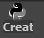
点击此自定义的快捷方式。 会弹出如下窗口：
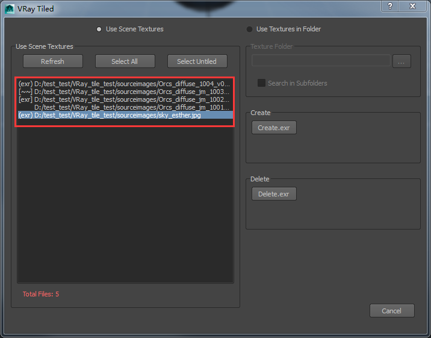
红框中的路径是目前场景中所有的贴图路径。
注释：¶
- (exr) : 表示当前贴图文件存在已转换好的.exr文件，但是未与File节点连接。
- [~~] : 表示当前路径下的贴图文件是.exr文件，但是文件丢失不存在。
- [exr] : 表示当前贴图文件是转换后的.exr文件，且已于File节点连接。
- ‘ ’ : 表示当前贴图文件不存在.exr文件。
2. 选择转贴图的方式:¶
1. 以工程文件中查找贴图的形式¶
表示根据文件中的贴图列表进行贴图的格式转换.
表示刷新列表中贴图的贴图连接状态和贴图的选择状态。
只能选择未能连接.exr文件的贴图项。批量选择，便于执行Delete.exr。
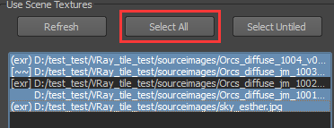
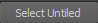
只能选择未转换过.exr文件的贴图项。批量选择，便于执行Create.exr。
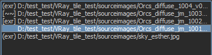
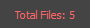
表示的是该渲染文件中存在的贴图文件的数量。
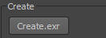
表示对选择项执行创建.exr文件的操作。 点击创建时会在原贴图路径下创建后缀为_tiled.exr的文件，且将file节点上的贴图文件替换成转换后的_tiled.exr文件文件。执行结束后点击Refresh即可查看更新后的贴图状态。
eg :
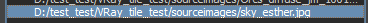
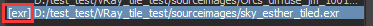
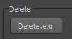
表示对选择项执行删除.exr文件的操作。 点击删除时会先判断选择项文件是否是.exr文件。如果不是.exr文件，存在对应的.exr文件则执行删除。如果是.exr文件，则首先判断路径下是否还存在原格式贴图。原格式贴图文件存在则将file节点上连接上原格式贴图后删除.exr文件即可。若不存在原格式贴图，则保留.exr文件不执行删除操作。执行结束后点击Refresh即可查看更新后的贴图状态。
2. 以工程文件中查找贴图的形式¶
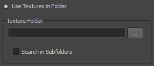
选择 Use Textures in Folder 就是通过指定文件夹进行.exr文件的格式转换。
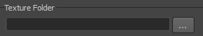
选择需要转换贴图的文件夹路径。
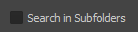
选择则表示文件夹下的子文件内文件也执行创建，反知不执行。
| maxdepth: | 2 |
|---|